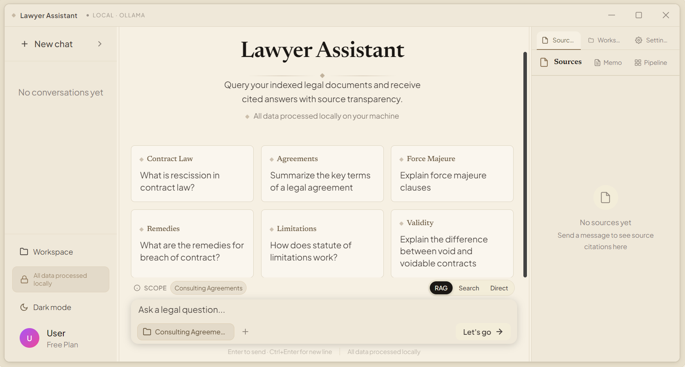

Case Study · Research Automation
Lawyer Assistant is an AI research system that searches a law firm's own documents, verifies citations, and produces evidence-backed answers — so legal professionals spend their time on judgment, not page-turning.

The system was tested against its own benchmark suite before being presented as dependable: a 200-question runner, a golden evaluation set, and CUAD-based contract tasks measuring retrieval quality and citation correctness.
Figures from the project's own evaluation suite — see backend/benchmark in the GitHub repository. Data privacy is architectural: offline mode has no cloud path.
Research that used to consume an afternoon of manual reading becomes a cited answer a lawyer verifies in minutes — on hardware the firm owns, with privilege intact. The lawyer stays the decision-maker; the automation does the legwork.
If your team spends hours searching and reviewing documents, tell me about it — I'll give you an honest assessment of whether it can be automated.
Describe Your Workflow